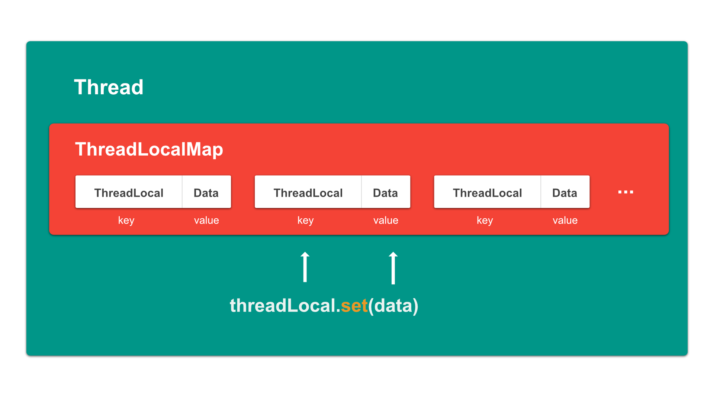

ThreadLocal
ThreadLocal<T>可以认为是一个绑定到当前Thread的标签。
可以将一个value绑定到这个标签，形成一个Entry存储到由Thread维护的ThreadLocalMap中。

ThreadLocalMap
ThreadLocalMap是ThreadLocal的一个静态内部类，其实就是一个重新实现过的HashMap，相对于HashMap有如下特点：
- 定义一个继承自
WeakReferener<ThreadLocal<?>>的静态内部类Entry：
1 | static class Entry extends WeakReference<ThreadLocal<?>> { |
作用类似于HashMap中的Entry，只不过这个Entry的key是自身的外部类ThreadLocal<T>，value则是ThreadLocal<T>的泛型参数。这就是前面为什么说ThreadLocal<T>其实是一个标签。
这个做法有一个非常精妙的地方，前面提到过ThreadLocalMap并不是由ThreadLocal维护的，而是由每一个Thread维护自己的ThreadLocalMap。也就是说当线程退出之后，对应的ThreadLocalMap将会被回收，里面存储的所有Entry也会被回收。
但需要注意的是，在这个设计中Entry的ThreadLocal<T>是弱引用，而value是强引用，意味着当ThreadLocal<T>的引用被销毁后，Entry对value的引用依然存在，所以如果需要回收ThreadLocal对应的数据，则需要手动将value一并回收，否则会发生内存泄漏
- 与
HashMap不同，ThreadLocalMap在处理哈希冲突的时候使用的是开放地址法，当位置被占用的时候会直接去找下一个位置，利用空间换取时间，效率要高于HashMap
ThreadLocal如何与Thread绑定
先来看ThreadLocal中的get和set方法：
1 | public T get() { |
从源码中可以看出，ThreadLocal在操作之前都会通过Thread类获取当前线程，从而保证下一步获取到的ThreadLocalMap永远是在当前线程中维护的，从而将自己对应的数据绑定到线程。